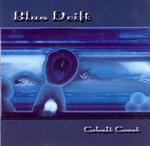

| Artist: | Blue Drift |
| Title: | Cobalt Coast |
| Label: | Buglefish Records |
| Length(s): | 57 minutes |
| Year(s) of release: | 2003 |
| Month of review: | [10/2003] |
| 1) | Slingshot Round The Moon | 4.48 |
| 2) | Cobalt Coast | 5.28 |
| 3) | The Eighth Room | 6.35 |
| 4) | Freak Weather | 13.46 |
| 5) | Cape Canaveral | 3.29 |
| 6) | The Battle Of Morton Ridge | 2.13 |
| 7) | Spirit | 11.30 |
| 8) | Drift Glass | 9.55 |
Next one up is the more moody title track. More tension is present on this one. Musically I hear similarities to Flamborough Head, but Blue Drift is instrumental. The guitar plays a more prominent role here, taking over the one from the keyboards which play an atmosphere building supporting role. Production is good, enabling one to hear all the instruments involved clearly.
The Eighth Room is a noisy one with rambling guitar work, quite heavy as well. The melodies tend to the Arabic, and are repetitive with the drive lent by the drums. Strong instrumental work. The more jazzy continuation with hammond is a bit too loose.
The opening of Freak Weather has elements of La Villa Strangiato. The continuation is a bit more moody, with stretched out guitar lines. In a way some of these parts can be likened to the heavier side of Colin Masson on his solo album. However, it is more obvious that a band is at work here, and the Oldfield link is not present. Blue Drift is more easily compared with the symphonic bands from the Netherlands on the Cyclops label. In the middle the drummer lets off a bit, but then the music takes to pacing again. The mood building works fine here, arrangement and melody fitting well together to evoke a certain impression, in this case we may assume of freak weather. Then we get a turn for La Villa Strangiato again, but not for long as the music slows down again to moody guitar work.
Cape Canaveral is relatively short and an up-beat rock track. It features rhythm guitar and is certainly less symphonic than the other tracks. The (non-rhythm) guitar is more jazzrock oriented here. The Battle Of Morton Ridge is even shorter, a bombastic track with symphonic keys, a bit militaristic of sound. Again, the title is well chosen. The keys are a bit cheesy on this one, but that goes with the style of the song. Spirit is a long one. It opens with keyboards and some sitar like playing. Like one may expect in a track of over ten minutes, there is variation in mood and style throughout, this time by means of a long soft section in the middle, somewhat New Age like in outset, later when the guitar comes in again one may be reminded of Shine On You Crazy Diamond. The rock returns soon after, uplifting the song and making it a rather psychedelic affair with Arabic style melodies.
Drift Glass is the closer, which is in the by now familiar vein. Although the large amount of acoustic guitar is maybe a bit different. Quite a relaxed track in its first three minutes, only later does the electric guitar set in (the acoustic one stays).